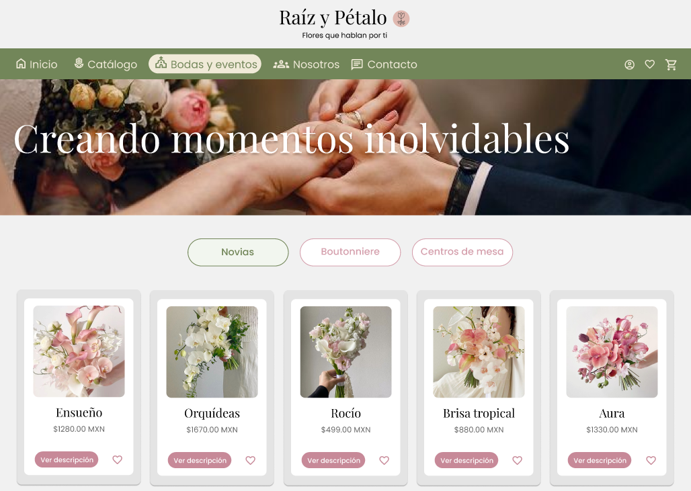
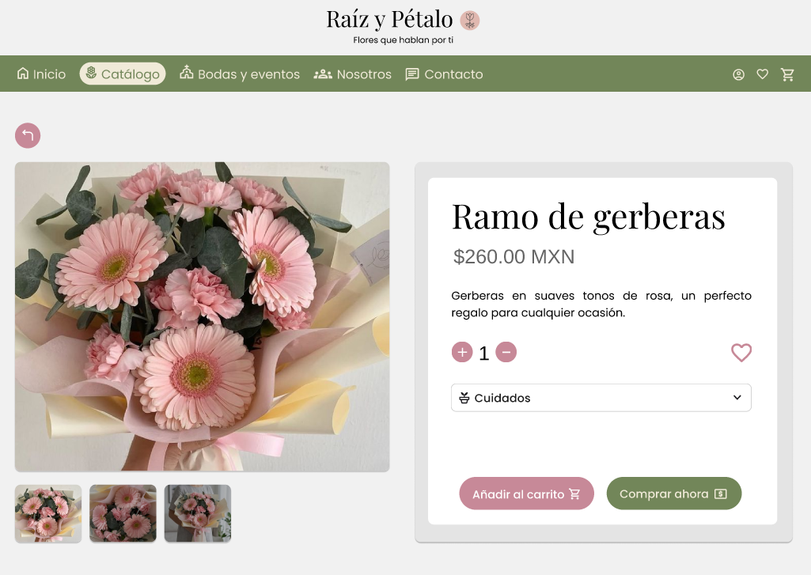
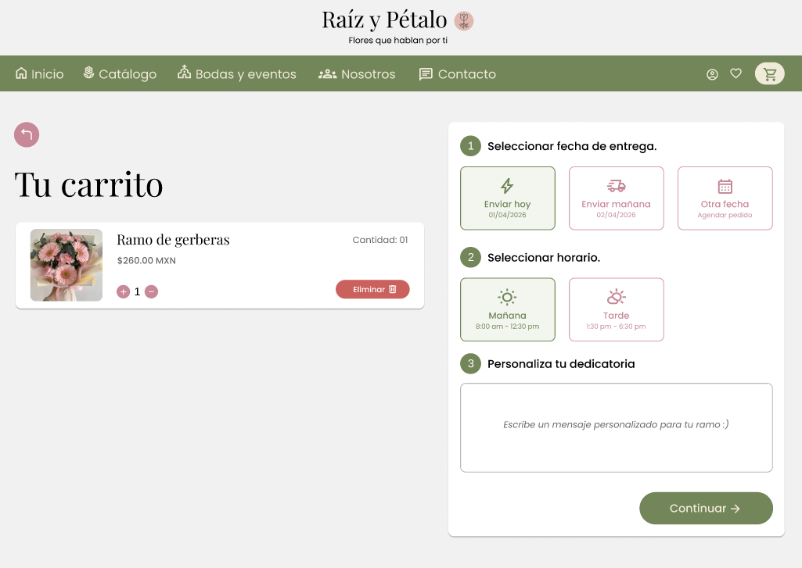
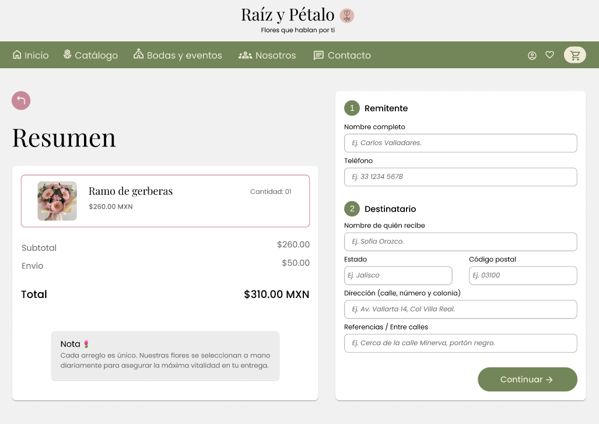

Florería online: Raíz y Pétalo

Sobre el proyecto
Proyecto conceptual para una florería ficticia enfocado en transformar la compra de flores en línea en una experiencia visualmente atractiva y emocionalmente significativa, donde el producto y la intención del regalo sean los protagonistas.
Problema
Muchas florerías digitales presentan interfaces poco atractivas, difíciles de navegar o procesos de compra confusos. Esto dificulta que los usuarios encuentren rápidamente lo que necesitan y reduce el valor emocional de la compra.
Usuario objetivo
- Personas que buscan regalar flores.
- Usuarios que quieren comprar rápido y sin complicaciones.
- Clientes que valoran lo visual, intuitivo y emocional.
Decisiones de diseño
- Uso de imágenes grandes para resaltar el producto y volverlo protagonista.
- Clasificaciones claras para reducir la carga cognitiva.
- Proceso de compra guiado por pasos simples.
- Paleta de colores suave y tipografía elegante.
Sistema de diseño
Para mantener consistencia visual y futuro desarrollo, se estableció un sistema de componentes reutilizables que permite estructurar la interfaz de forma clara y coherente.
- Botones primarios y secundarios.
- Tarjetas de producto.
- Inputs de formulario.
- Cambios de estado.
- Barra de navegación.

Solución
Raíz y Pétalo ofrece una interfaz minimalista centrada en lo visual y la simplicidad del flujo de compra, que reduce la dificultad en la navegación y permite al usuario elegir y regalar flores de forma rápida, segura y placentera.
Diseño de interfaz



